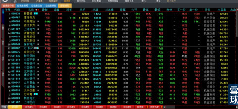
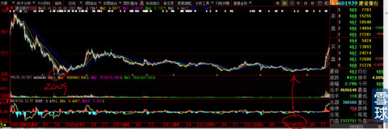
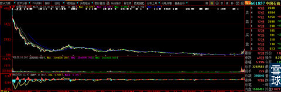

有2015年1月1日我发出《我的自选股》专贴，挂在网上2天后就删除了。因为我信奉《人是有运气的》和虽然天下财富人人有份，但还是应该有先来后到之分？
你们中谁是有心人保存了那张图片？因为我已经删除无保存请发给我写本帖资料用。
（刚刚收到亲粉还给我的下图，已插入请看）。

新年第一天写了几个帖子，其中有《巴菲特为什么不买黄金》和《我的自选股图片（见上图，原帖已经删除）》，现在我想直白的说出我帖子想说的内心世界观，你们会发现，对于人文历史的思维要远远强大过所谓的炒股技术与图形分析。
《巴菲特为什么不买黄金》？是因为他80多岁了，丰富的阅历使他越发对人类充满了不可遏止的怜悯与同情，人之将死其言也善。因为他明白财富泡沫的增长与货币泡沫收缩的真谛，明白善意的通货膨胀与通货紧缩两害相权取其轻的道理。人类老是搞不好善意控制下的适量通货膨胀，所以，总有经济危机发生。大家看到美国、欧洲这么多年一直在货币放水也难改他们通货紧缩的处境，日本更是使出吃奶的劲头天量货币放水，据媒体报道最近才开始有些许通货膨胀起色。中国近10年来货币放水创下人类前所未有的天量，几年之后还是发生了”钱荒“。这些夹杂了太多人文情怀的经济学道理我想全世界也没有几个顶级经济学家、精英政治家能够通透的发自内心坚定信仰的整明白。更不用说我们这些普通人了。记得我以前写过一个帖子《博弈的艺术》中有一句话：过于理性就是非理性。就是对只有逻辑没有人文历史情怀的对象说的，殊不知：人是万物之灵，怎么可能按照棋谱一步不差的下第二步？一切都在变，我变敌也在变，演化无穷无尽的棋局，而阴谋论就是照着棋谱下棋的人，一旦对手稍微有变化，立刻没有下招了。
回到《巴菲特为什么不买黄金》帖子的第一个打牌比赛例子。我想说的道理是：
1、最终财富会到少数人手里，无论是淘汰赛制还是循环赛制，都无法改变这个结果，赛制唯一的作用只是对比赛时间有所改变，就如同私有制还是公有制；
2、淘汰赛也好循环赛也罢，赛制就如同不同的社会意识形态制度，照样改变不了财富最终集中到少数人和少数集团手中（例如个人富豪、公司与上市公司、央企与民企）。
3、任何意识形态制度，都是通过控制生产资料、原料、市场准入制度（例如国家可以办银行个人不行、通讯、专利、WPO、技术创新、资本门槛等等）手段获取剩余价值也就是利润。区别是资本主义生产资料私人所有制，社会主义生产资料公有制。孰好孰坏不重要，重要的是我们明白只有控制、垄断上述资源才有了集中财富的工具。哪怕是上帝创造的天赋资源，例如化石能源、黑金属贵金属化工等矿藏、宝石资源等等。
4、财富集中到少数人手中就会造成流通功能的货币形态沉淀一部分，时间玫瑰威力就会导致”钱荒“，”钱荒“导致生产投资型企业与个人受到价格下跌企业亏损的惩罚，继而亏损坏账，使债权人受损。经济危机的本质，就是对过往债权债务的重新整合与对冲。历史上用暴力革命来完成这种对冲（打土豪分田地），现代文明世界用经济危机方式来完成这种对冲。实现财富的再分配与再集中的无穷无尽的轮回。在我们可以预见的人类未来，这种对冲还看不到尽头。
5、。。。。
6、。。。。。
好了，简单介绍到这里也基本可以把我本帖下文的逻辑打下坚实基础。
由上我们会知道只要政治稳定，就会有一个看似残酷却现实的结果：最终通货膨胀是硬道理，1万年不变。这是我到韩国、日本吃面付账时顿悟的直白道理：想当年，韩币、日币与人民币一样，是用分计算买东西的，日本兵侵略中国时候的军饷每月5日元军票。几十年过去了，韩币还是那个韩币、日元还是那个日元，现在吃一碗面是要用N万元来交换了。这一刻，我对书面知识与亲身经历的感悟更进一步：道理都懂，只有亲手买面的时候才会有顿悟的震撼。所以说：读万卷书不如行万里路。
通货膨胀另一个好处就是”屌丝有逆袭“的机会。好好想想：如果货币面值交换价值不贬值，那不是富人永远富有、没有积蓄的年轻人永远财富无门？虽然对前辈奋斗者的积蓄不公平，难道还要通过流血革命改变命运吗？
一、我对所有的阴谋论持嗤之以鼻的态度，因为它经不起起码的逻辑推导，虽然它貌似环环相扣逻辑缜密。
二、只要相对民主一点的国家，最高权利的争夺最终尘埃落定，人民就能够创造无穷无尽的财富，哪怕最终夺取权利者是个严重智障儿（北朝体制除外）。这已经被历史无数次证明，就像几百年前的天朝出现过的那些不事朝政几十年的皇帝，这个时期往往是财富大爆炸时期。
三、经济危机不可避免，这是对无法改变的贪婪人性的强制矫枉过正。但是，一切都会过去，人类对未来永远会充满信心。
有了上述世界观基础，再来看看我们的A股市场。
2008年美国开始引发的经济危机已经过去6年，虽然媒体每天还在喋喋不休并且充满了阴谋论。你们会发现，银行股的利润年年高速增长，2014年6月银行股价却与2008年相当，那是多大的经济危机呀。见下图举例

经济有涨有落，但是未来的增长一定比上一个基础更大。天赋资源价格随之涨跌，但是一定会有轮回。48元疯抢中国石油时逻辑、理由掷地余声犹在，人性却不能从历史经验获取任何经验与教训，好笑的是当年的逻辑与理由都消失一般。中国石油股价跌到如此之低无人问津（见下图），哪怕是手握千亿的公募基金都不去思考这么简单的道理：

有人问我未来房价是涨是跌？我的回答是：这个问题只有上帝才知道。但是我知道什么时候是买房还是卖房时刻：当市场钱荒和利率最高的时候，一定是上海房价最低的时候，反之就是最高应该卖出的时刻。个中道理你自己去想。
就如同黄金、石油跌价到腰斩再腰斩的时候，一定是它们资源掌控者—上市公司股票最应该买入的时刻。只有傻逼才会说：现在油价、黄金价格还在大跌，这些股票怎么可以买呢？业绩那么差？要知道：证券市场总是提前半年以上已经在价格上提前反应了它所有的利空或者是利好。石油、黄金股票价格长达N年无穷的下跌已经充分反应所有商品价格下跌的利空。
用膝盖也能想通这个道理：正因为大宗商品资源价格下跌，所以拥有它们资源的上市公司股票价格才会有机会跌到如此之深，不然，哪里会有这样用未来十分之一不到价格的买入机会？业绩看的是未来，买股票就是买未来而不是过去，这才是股票财富的核心密码！等黄金上涨的到3000—5000美元一盎司的时候（我坚信不需要几年就能到达，看看货币放水的程度，没有最多只有更多），你还可以买到这样的价格吗？有粉丝问我：满手南山铝业要不要换股或者再投入更大资金？我的回答：既然你已经拿了那么多年，就再拿2年，我相信它会再创未来。因为资源商品再度上涨的时候，投资建设那么大规模冶炼、资源是需要时间的，这个时间是用N年计算的。不是届时有钱就可以任性立刻拥有这样实物资产，就像人们不明白，为什么那么差业绩的中国远洋涨那么高，你要知道，建造一艘大型货轮需要多长时间吗？更不用说是大型船队。买这些股票的都是市场最大资金所有者，他们比你傻？就因为他们比你更懂“时间就是成本”这个道理，所以他们买的是那么肆无忌惮。这与炒股技术完全无关，大道至简。所以说，这类股票的估值方法与现在的业绩已经毫无关联，是这类上市公司掌控和垄断的资源决定了通向未来财富之门。石油价格不可能在很低位置持续很长时间，这个不是技术分析和媒体报道就可以改变的。因此，要提前研究与石油价格上涨有关联备受打击的上下游行业股票群体。
另外一类企业的估值，例如”000651格力电器“以及其他创业板成长股，不是简单的用市盈率，而是用净资产收益率和成长率结合计算适配的市盈率来衡量。我们举例计算一下你就会明白：格力电器每股净资产14.5元（2014年12月），每股盈利4.5元，净资产收益率4.5/14.5=31%代表它资本金的获利能力，就像你妈给你100元钱，你一年能挣会多少盈利。我们假设它2015年每股收益5.2元，利润增长幅度为（5.2—4.5）/4.5=15.55%代表它未来获利成长潜力，两项加权平均（31%净资产收益率+利润增长率15.55）/2=23.27%，就算我们再打八折好了算18.5%，那么我就至少给他18.5倍的市盈率=未来每股收益5.2元*18.5=合理市场价格96.2元。一旦企业盈利没有成长能力，即使每股绝对盈利额很惊人（假设贵州茅台利润不再增长）那么市盈率8倍都嫌多。因为股民给它钱不是为获取股息，是让它更快更多的成长，如果仅仅是为获取股息，股民为什么要冒那么大的市场价格涨跌风险，直接定存银行好了。这就是为什么国际市场那么多蓝筹股市盈率很低的原因，因为它们的业绩停滞不前，没有了股票最富魅力的成长性要素了。我们买股票买的就是未来，买的就是微软、苹果创业初期的伟大梦想。创业板很多股票为什么上市就有100多倍市盈率还要被爆炒？因为它们中的佼佼者盈利能力连年数倍成长，市场就给了它们数百倍的市盈率。
这个世界从来不缺乏赚钱的顶级智慧头脑，李嘉诚就是最优秀的代表。老话说：马无夜草不肥，人无外财不富，揭示了富豪们财富爆发式增长的秘诀：他抓住了每一次经济危机对冲全社会债权债务机会，以一博十，才可能在有限的时间使财富呈几何型增长。这个方法对屌丝散户更是同样有效。只要你再回头看看我上面的文字，就知道财富的大门为谁而打开。
你们再用心看看我新年首日刻意贴出来的自选股：市场最不看好黄金股赫然在目，这就是新年首日贴出我电脑自选股给有有心人的深刻用心所在。当日就有粉丝问：黄金和大宗资源跌的那么厉害怎么可以买黄金股票呢？我的回答是：你是这样想，猪也是这样想的。
现在知道我为什么老是说：技术只有建立在基本面分析上才有用。为什么我会去看”漳泽电力'？因为它低价，因为它是煤炭坑矿发电节约运费，因为它很大程度上是中国最大煤炭资源山西大同煤矿资源拥有者，外加电网改革。
为什么我昨天聊天时说：保险股不要指望它们再跌下来。它们横盘就等于是下跌，因为它们的保费资金买了大量的中国石油、大宗商品资源类股票，它们变相的成为了综合资源股。谁在行业最残酷寒冬拥有并控制了天赋资源，谁就拥有未来。所以中国平安这类股票未来一段时间内没有最高只有更高。
就如同券商股刚刚露头的时候我就大声疾呼：板块的行情其实才刚刚开始，散户不要被前期的涨幅所吓倒。用未来3年时间看，这些拥有天赋自然资源、市场准入门槛、建造时间门槛、环境垄断门槛（例如浙江龙盛和闰土股份主业就是国家明令禁止不允许再建的行业，这也是一种准入门槛）等等股票就如同是2014年11月1日的券商板块。
上个月，一位30多年没有见面的女同学对我说：你是为财富而生的。
后来我思考很久，结论是：再深刻的思维没有付诸实施并且恒心持有以及一颗勇敢的心面对市场的上下翻飞，一切都是枉然。
所以这篇帖子我取名叫：本帖是你在牛市持股强心镇定剂。每当你长时间持有“有效时间玫瑰目标股“茫然的时候，你再看一遍本帖，相信会有伟大梦想和美好未来。当然，你持有的是鸡蛋才会得到时间玫瑰的奖赏，石头是孵不出小鸡的。
是的，未来市场走势中当然有大起大落，所以我们才用心学习技术分析，目的是能在正确的时间进行大波段的买进待涨与卖出后等待再进场机会。但是，在行业最低迷时期买入持有目标股，是股市财富增长的不二法则。再好的技术与买入时机相比都是个屁。
这才是我们的梦。
 |
谁控制住资源谁就是未来的主宰：本帖是你在牛市持股强心镇定剂炒的是心 2015-01-07 12:28:43 |
Copyright © 1996-2014 SINA Corporation All Rights Reserved.